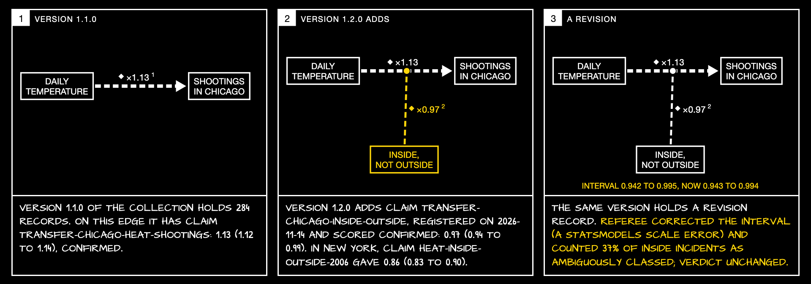

A strip drawn by a script from the Underlay
We replicated in Chicago at eleven, published a new version, and the difference drew this

Every number, verdict and referee’s sentence here is read from the Underlay’s difference between two versions. Only the two variable names are typed by hand.
This strip was not drawn by us. tools/strip_from_diff.py calls GET /versions/v1.2.0/diff?from=v1.1.0 on system-community/nyc-concordance-claims and fills the frames: the edge as the earlier version holds it, what the later version adds, and the revision record. The content is the replication. In Chicago shootings outside rise 1.140 per 5 °C and shootings classed inside rise 1.102, a ratio of 0.968 (0.943 to 0.994). New York's ratio was 0.861. So the direction transfers and the size does not: inside shootings do rise in Chicago. The referee found that 37% of the incidents we classed inside in Chicago's free-text field were porches, yards or garages, and that our interval was too narrow; both are in the record. The node names are typed by hand because the collection has no field saying which variable is the exposure, which is our first request.